Blender · November 22 · Art in progress
From West Town to the East yards
Static models and scene studies, not a game build. These previews do not validate traversal, collisions, device performance or encounter behavior.
Blender · W01 matched composition · Art in progress
West Plaza daylight
Recovered 22 m terracotta shaft, clock, and basin at the existing West Plaza anchor. The board compares the original concept and earlier staging with the current Blender render. It is not navigation or runtime evidence.
Blender · W9b · Cosmetic proposals
West cache hoverboard finishes
Oval Ochre, Rock Jade, Alley Violet, and North Frost are four possible cosmetic rewards. The original board and default cyan materials are unchanged. None of these finishes has been assigned to a chest or wired into the game.
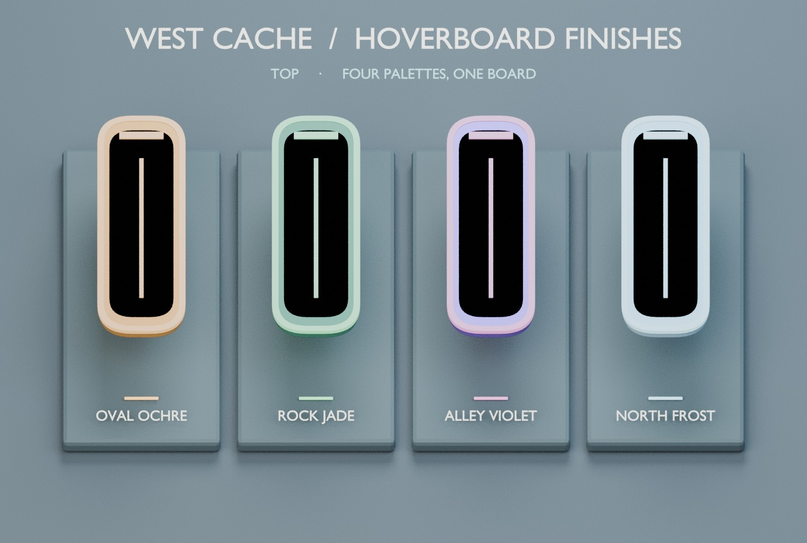
Top: four variants selected from the same exported asset. Underside: static repulsor colors, not the live pulse.
Underside: static repulsor colors, not the live pulse.Variant-enabled GLB · 126,860 B, including all four material mappings. It shares one unchanged 1,232-triangle geometry payload. Viewers without material-variant support show the default board. Rebuild notes.
Blender · W6a · Moving-platform blockout
Movers Station 4: disc and sweep arm
The existing 9 m disc and sweep arm now export with independent pivots. A separate fixed collar fills the 30 cm gap under the disc; the original course scene is unchanged.
 Neutral and adjusted poses from the same reimport. The disc turns 45° and the arm 115° in the test. Turquoise markings are preview-only.
Neutral and adjusted poses from the same reimport. The disc turns 45° and the arm 115° in the test. Turquoise markings are preview-only.Spinner GLB · 75,812 bytes · 1,176 triangles. Pivot and dimensions · Original full course study · Rebuild notes.
Static GLB with movable nodes. No baked speed, collision, deck carry, arm impulses or course behavior tested.
Blender · W1a · Rigged town NPC study
West Plaza: the Surveyor
The Surveyor shares the stable hand and weapons keeper’s 21-joint rig and color atlas. Reflective tape, a temple optic and a survey slate distinguish the new vest. The optic and slate are costume pieces.
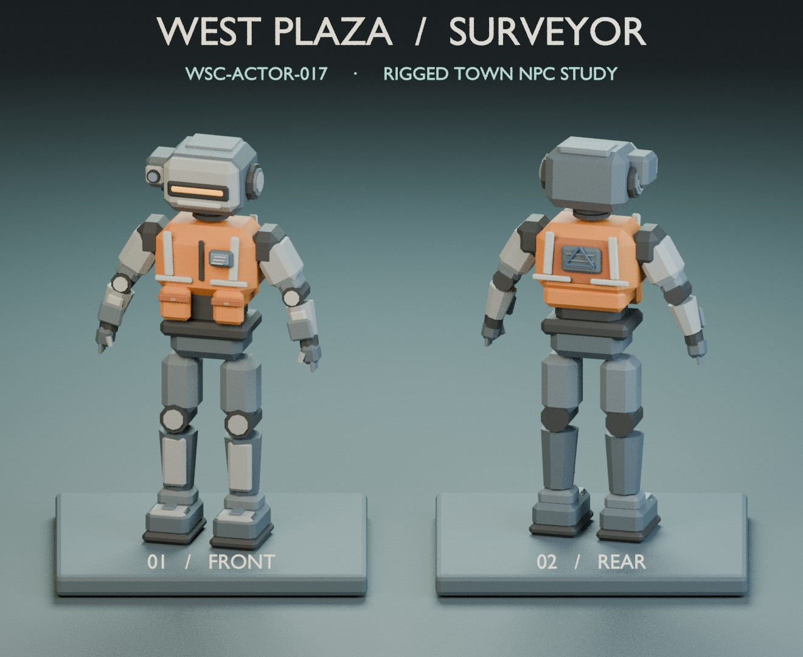
Decoded and reimported in Blender: 3,920 triangles, one material, one 3-second idle.Packed Surveyor GLB · 129,432 bytes · Meshopt decoder required. Other town bots · Source and rebuild notes. No dialogue, native figure wiring or placement.
Blender · E5b · Lighting readability test
East container yard: shadow pools
The same yard with the pool decals on and off. The container, cover, fence, floodlight and shed are existing GLBs. Dynamic cast shadows are disabled in both frames to isolate the effect of the reusable decal.
 Shadow pools on. Each marked patch uses the same vertex-alpha mesh.
Shadow pools on. Each marked patch uses the same vertex-alpha mesh.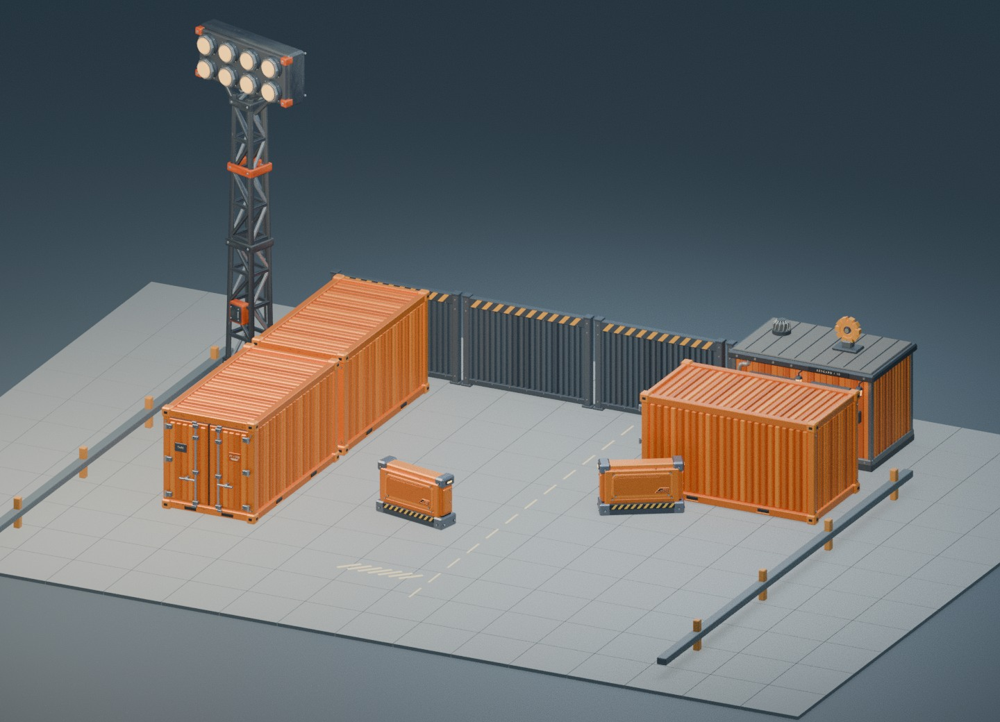
Shadow pools off. Same camera, fill lighting and props.Decal GLB · 6,808 B, 220 triangles, no textures. Placement and donor measurements · Rebuild notes · Desk and keycard.
Studio layout only. The decals do not make the player hidden; no patrol, collision, quest, or phone performance tested.
Blender · W9b · Articulation study
West cache chest: opening lid
The cyan-seal chest keeps the original closed dimensions. The rear hinge now moves the lid and upper latch; the lock and base stay put. Inside is an empty lined tray.
 Two moments from the reimported 1.17 s opening clip. The lid opens 111.7°. Test overlaps persist at the seated seam and hinge; this is not a collision result.
Two moments from the reimported 1.17 s opening clip. The lid opens 111.7°. Test overlaps persist at the seated seam and hinge; this is not a collision result.Opening GLB · 497,608 bytes · 17,842 triangles · Reimport measurements · Original chest · Rebuild notes.
The packed opening file requires glTF mesh quantization. No loot, cache placement or game flag wiring was tested.
Blender · W11a / E9 · Effects tests
Storm Hour: rain and pavement splash
Two separate, texture-free assets: a static 6 × 6 × 4 m stamp of wind-slanted streaks and a short animated pavement splash. The frame uses the unchanged beacon and charged lamp as a warm reference.
 Blender study with instanced rain and frozen splash samples. Wet paving, background and lights are studio dressing.
Blender study with instanced rain and frozen splash samples. Wet paving, background and lights are studio dressing.Rain tile GLB · 17,680 B · 304 triangles. Splash GLB · 8,304 B · 104 triangles · 0.833 s animation. Original beacon · Rebuild notes.
No runtime rain movement, surface detection, weather scheduling, mobile performance check, or Lights Out integration.
Blender · W11a · Reimported motion test
Course flag: wind loop
The 2.5-second clip animates only the existing orange cloth, hem and hoist; the original pole and hardware stay unchanged. Use it instead of the three static cloth meshes at the same model transform.
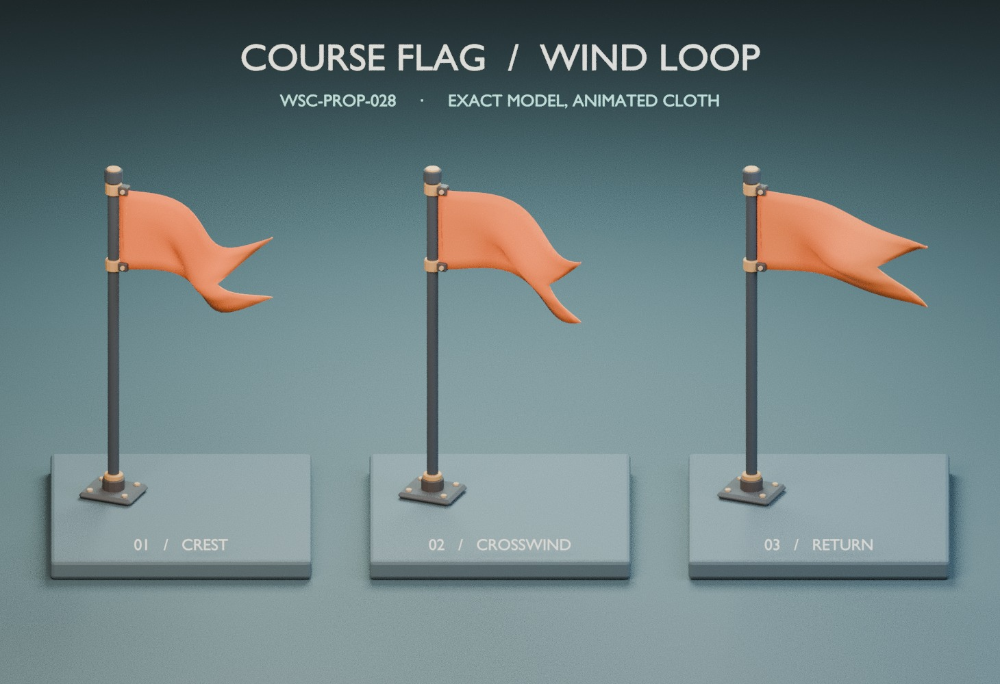
Frames 0, 17 and 35 from the exact reimport. The clip’s first and last poses match.Animated cloth GLB · 204,108 B · 2,168 cloth triangles. Original flag · Rebuild notes. No live wind coupling or mobile benchmark.
Blender · West W7a · Traversal art study
West grapple: one reusable hoop
The cyan hoop and mint channel are separated from the existing post without remodeling. The origin is now the center of the ring; local glTF +Z faces front. The short roof mount is a Blender placement example, not part of the GLB.
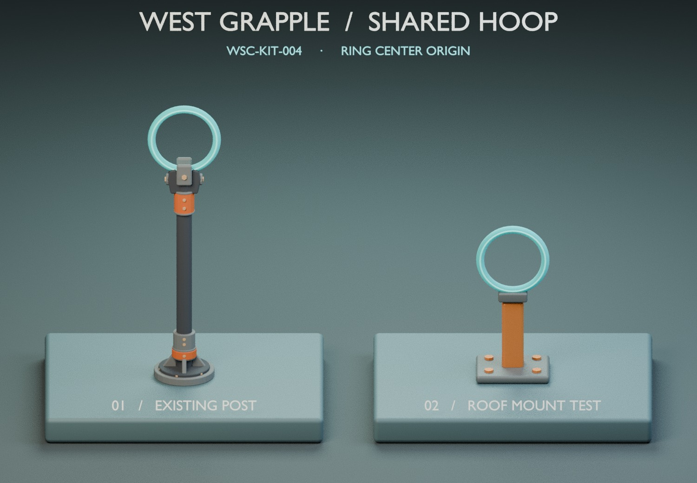
Exact geometry reimport: 2,112 triangles; 40,196 bytes. Moving the roof reference from the old center to the rim reduces its distance from pole 2 from 51.05 m to 37.02 m. The mast and tower references remain 41.03 m apart. These are not takeoff-eye distances or sightline tests. W7b zip attachments are unchanged.
Moving the roof reference from the old center to the rim reduces its distance from pole 2 from 51.05 m to 37.02 m. The mast and tower references remain 41.03 m apart. These are not takeoff-eye distances or sightline tests. W7b zip attachments are unchanged.Hoop GLB · Placement study JSON · Blender rebuild notes
Blender · E10c · Room study
Training Vault: two-plate puzzle room
Room 1 uses the existing round bulkhead, floor plates, industrial bays, pressure plate and crate. The amber and green indicators show the empty and weighted plates while the door stays locked. No physics or room logic is included.
 Entry camera. The color strips by the door repeat the status of each plate.
Entry camera. The color strips by the door repeat the status of each plate. Cutaway. The clear gap between the pressure plate frames is 2.4 m.
Cutaway. The clear gap between the pressure plate frames is 2.4 m.Indicator GLB · 58,132 bytes · Placement manifest · Blender rebuild notes
Blender · E03 · Distance model
East plant pot: near and far
The original dark pot and broad leaves are unchanged. For distance, a new vertex-colored model keeps the overall shape in one glTF primitive, with no textures.
 11,068 triangles near; 680 far. The game does not switch between these models yet.
11,068 triangles near; 680 far. The game does not switch between these models yet.Original GLB · 232,684 B · Distance GLB · 53,604 B · Blender rebuild notes
Blender · W10 paddock · Coat study
Biscuit: two coat directions
Amber Bay and Winter Dun are palette studies rendered on the existing Nalati saddled horse. Both preserve the 24-joint rig and 5,000-triangle body. Amber Bay is the warmer starting point. The orange head armor from the riding mockup is not part of this study.
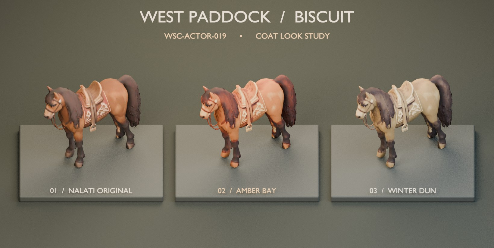
Actual Blender reimports. No gaits, mounting, or in-game deployment tested.The derived test models were 285–286 kB, over the proposed 180 kB budget. Source and rebuild notes
Blender · W01 street furniture · Static art
One lantern, two mounts
The existing forged wall lantern stays unchanged. A new floor-standing post has a flat mounting face that accepts the same model. The Blender reimport verifies the fit; no placement or game lighting was changed.
Post GLB · 37,232 bytes · 620 triangles. Existing lantern GLB · 206,356 bytes. Place the lantern at (0, 2.27, 0.182) m in the post’s glTF coordinates.
 The separately exported post and original lantern, reimported together.
The separately exported post and original lantern, reimported together.
Blender · Catalogue audit · Seven existing assets
Seven models verified against the catalogue
These are reimports of existing GLBs, not new models. Each is scaled to fit its tile. The jump pad is an inert casing, the mounting block is not rider-tested, and the lantern is the wall variant only.
 The exact seven exports by catalogue ID. No placement, physics or production acceptance is implied.
The exact seven exports by catalogue ID. No placement, physics or production acceptance is implied.Earlier reviews: bollard and cargo crate, lantern, market stall, window, jump-pad casing and mounting block.
Blender · E11c Gauntlet C2 · Static art
Gauntlet reveal lift
The 6 × 6 m deck and fixed pit frame are separate downloads. The same deck sits flush in the left view and is translated 4 m up in the right view. Geometry checks confirm 60 mm of clearance per side throughout that vertical travel. The studio base is not exported. No winch motion, banner placement or Supervisor encounter is implemented.
 Two exact GLB reimports posed in Blender, not a game or physics test.
Two exact GLB reimports posed in Blender, not a game or physics test.
View the separate container-yard shadow pool test.
Blender · E5b Stealth Yard · Static prop pair
Foreman’s desk and Vault keycard
The 1.78 m worktop, lamp and ledger form one prop. The card exports separately so it can move independently of the furniture. Its copper edge and keyhole mark echo the Training Vault portal. No shed placement, pick-up behavior, stealth logic or unlock has been implemented.
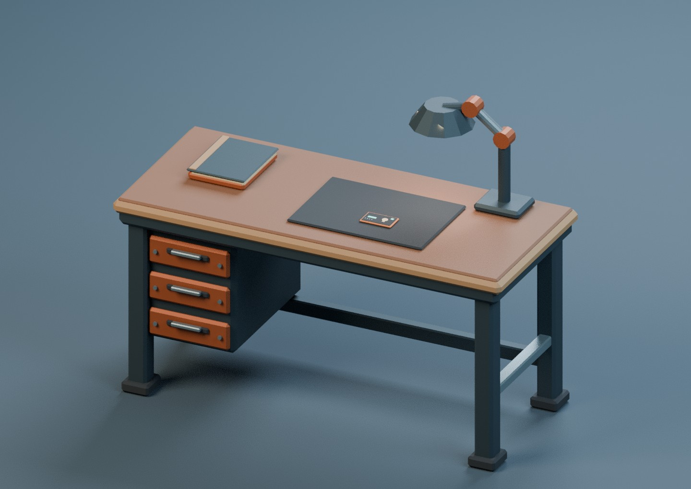
Exact export reimport, staged together. Close-up of the separate pickup model.
Close-up of the separate pickup model.See four optional cache finishes.
Blender · W5a player equipment · Static export
The native hoverboard, top and underside
This is the solid geometry shared by the ridden board and Model Explorer, not a new model based on the W07 crop. The four materials retain steady cyan trim and repulsors. The game's pulse and additive halos aren't part of this static GLB. The runtime board is unchanged.
Download native hoverboard GLB · 122,392 bytes · 1,232 triangles
 Two angles of the exact reimported GLB. The studio stands are not in the download.
Two angles of the exact reimported GLB. The studio stands are not in the download.
See the separate rain and pavement splash study.
Blender · E9 Lights Out · Static state studies
Storm beacon: unlit and charged
The same 5.47 m tower serves both states. An optional emissive lamp drops into its open crown using the same asset origin. The ladder is visual dressing. Quest interactions, sound, weather, and map placement are not implemented.
 Exact GLB exports reimported in Blender: unlit tower at left, the same tower with the lamp at right.
Exact GLB exports reimported in Blender: unlit tower at left, the same tower with the lamp at right.
Blender · W1a West Town · Rigged art prototypes
Stable hand and weapons keeper
Two role variants of a common town robot with the same body, 21-joint rig, colour atlas and three-second studio idle. The stable hand wears canvas over orange workwear; the keeper wears a blue split coat with copper cuffs. Neither figure has been placed in the game or wired to dialogue or shops.
 Blender render made by reimporting the downloadable GLBs. This is not in-game NPC footage.
Blender render made by reimporting the downloadable GLBs. This is not in-game NPC footage.
Blender · W5a D7 Hover Park · Static geometry
One launch wall, two park placements
The standalone 45 m module was extracted from the existing park build. It runs 9 m from the toe to a 4.5 m design crest. Turning a second instance 180° recreates the other side; the 8 m flat center is separate. This is the nonvertical D7 launch channel, not the historical W07 halfpipe.
Download wall GLB · 76,800 bytes · 1,438 triangles. View the whole park or compare the 2.4 m and 3.6 / 4.8 m kickers. No collision or rideability check.
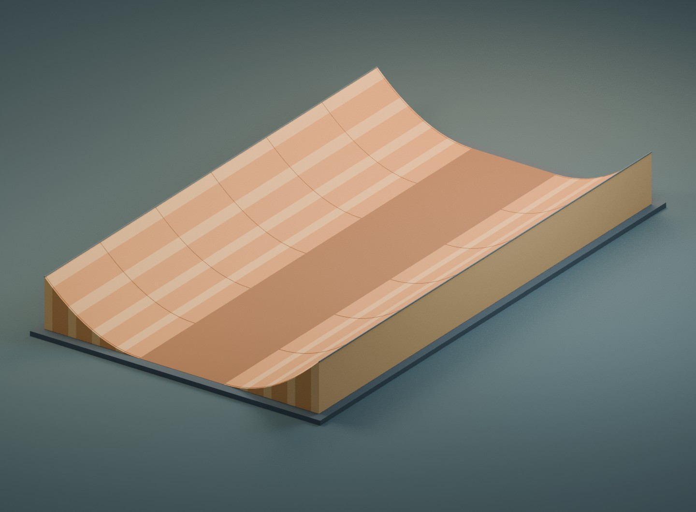
Two instances of the exact reimported wall GLB. The flat middle and display base are separate and not in the download.
Blender · W5c Hover Park · Static art
Hover Park grind rail family
Three standalone exports under WSC-PLAN-009: a level 12 m rail, a straight funbox descent, and a kinked rail toward the bowl. Each has a continuous steel crown and separate mounts. The existing Hover Park scene, traversal and scoring have not changed.
 All three exact GLB exports reimported into Blender. Studio spacing is for comparison only.
All three exact GLB exports reimported into Blender. Studio spacing is for comparison only.
Blender · E08 architecture · Static art
Training Vault portal
The orange masonry, keyed crest and bolted steel ring frame an open walk-in portal, distinct from the swung door at right. The stairs, sign, banner and open door are previously built assets in this studio composition. The portal swirl, Keycard lock and transfer are not part of this export.
Download portal GLB · 242,196 bytes · 4,688 triangles
 Blender render of reimported GLBs. Existing props are scaled for the presentation, not placed in the game world.
Blender render of reimported GLBs. Existing props are scaled for the presentation, not placed in the game world.
West Physics Yard · W4a/W4b
Four standalone Physics Yard props
The see-saw, rolling ball, skittle and pressure plate now have separate reusable GLBs. The see-saw axle and plate tread have independent pivots. This is Blender art validation only; there is no hinge physics, gate logic, or scoring in these exports.
Hinged see-saw GLB · Rolling ball GLB · Skittle pin GLB · Pressure plate GLB
 Blender studio render of the exported GLBs, reimported from disk.
Blender studio render of the exported GLBs, reimported from disk.
WSC-ACTOR-001 · Static study
Crate Mite
Catalogue entry · Model GLB · Phone-budget GLB
 Crate Mite studio and ten-meter scene views · 422 triangles; cyan eye tested in Blender at ten meters without bloom.
Crate Mite studio and ten-meter scene views · 422 triangles; cyan eye tested in Blender at ten meters without bloom.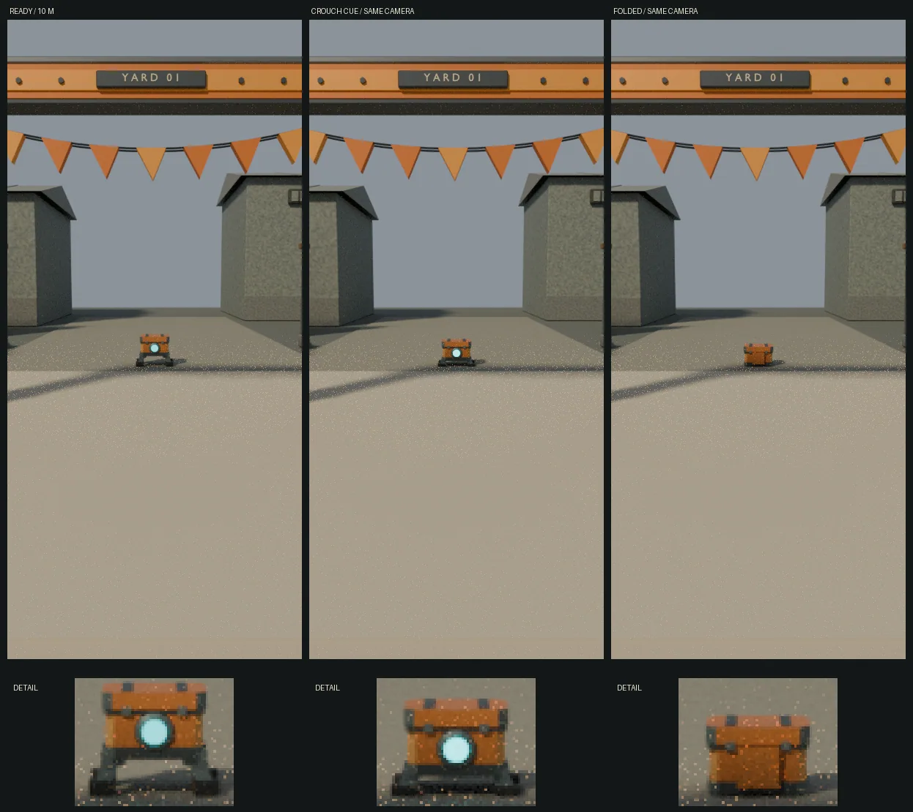
Crate Mite phone-budget pose comparisons · 386 triangles. Ready, crouch and folded poses in 402 × 874 Blender frames. No runtime animation.WSC-ACTOR-001 · Rigged combat prototype
Crate Mite rig and breakup
Catalogue entry · Download 386-triangle rig · Download 138-triangle far rig · First-person sword study · See the earlier static study
Two animated tiers share seven joints and eleven clips. The far rig uses 64% fewer triangles; an automatic distance switch is not hooked up. The death clip detaches the lid and legs. The Wildshard client asset loader accepted both rigs in separate test builds. Each build also passed server-side tests for both enemy attacks and the iron-sword kill. The frame strip is from Blender, not native-client footage; no iPhone rendering or showcase release yet.
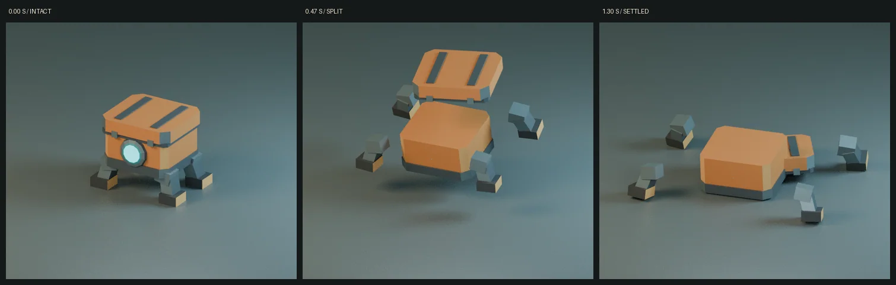
 Matched 402 × 874, bloom-free Blender frame test at 10 m. The cyan eye grows and the body crouches. This is not a native-client or iPhone performance test.
Matched 402 × 874, bloom-free Blender frame test at 10 m. The cyan eye grows and the body crouches. This is not a native-client or iPhone performance test.First-person test yard · Prototype
Iron work sword and gauntlet
The playable Crate Mite prototype now uses an editable 2,560-triangle hand and sword. The windup, strike and follow-through use the same 148 ms damage timing as its standalone simulation. These Blender pictures use the exact demo geometry and pose timing under separate lighting; they are not live or native gameplay footage.
East E01 · Standalone combat timing
Read the eye and counter
The Mite locks its attack line at the cyan warning. The bite gives 600 ms; overclock gives about 767 ms. The eye dims during recovery, and the status text calls out a miss. Scripted tests at 30 and 60 simulation ticks per second dodged and countered each attack without taking damage. A separate headless native-engine test reproduced the sidestep against both attacks, while the stationary controls took damage.
 Matched Blender poses from the playable rig. Standalone timing, not native gameplay footage.
Matched Blender poses from the playable rig. Standalone timing, not native gameplay footage.East E01 · Playable test yard
Crate Mite dock court
The two-meter robot dock sits outside the approach lane. Three recovered haul crates replace the old east cover block. A desktop browser playtest went from waking the Mite to a sword kill and one salvaged Servo. This is a standalone test; it does not place the pieces in the native shard.
Crate Mite rig · First-person sword
 Same court layout and GLB assets, rendered in Blender under different lighting. Not gameplay footage.
Same court layout and GLB assets, rendered in Blender under different lighting. Not gameplay footage.East E01 · Playable scene art
Concrete dock apron
The E01 mockup’s warm concrete, expansion joints and painted arrows replace the placeholder plane in the first-person test yard. The same editable layout supplies 48 slabs, a side drain and worn service markings: 374 triangles with no added texture downloads or collision. The rebuilt yard passed a Chrome sword kill and Servo pickup.
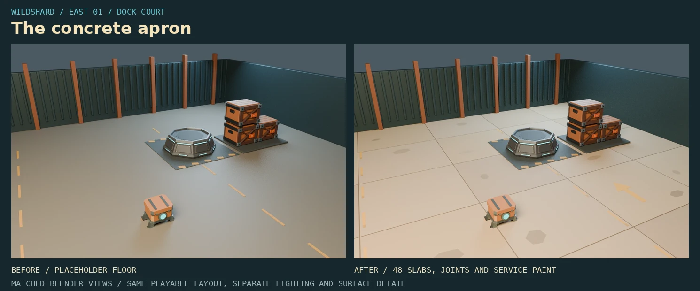
Same layout and assets in both views. Blender lighting and material bump are not browser footage.East E01 · First-person prototype
Portrait combat, first pass
A smaller HUD and rested sword pose leave room for the Mite. The cyan ground cue follows its locked attack direction. The movement stick, dodge and contact sparks are functional. Chrome finished the fight and collected a Servo in a 402 × 874 viewport. This is a Chrome layout test, not iPhone hardware or a native release.
East E01 · Portrait animation
Right-side sword contact
A portrait-only swing pose brings the blade toward visible armor on the right without changing reach, damage or timing. The same evaluation still misses fully offscreen enemies.
Browser fallback check: a yaw sweep at the entry and close-bite poses matched the previous pixels. At the close pose, cloud Chrome processed 8,744 fewer triangles and median Canvas rendering fell from 42 to 30 ms. The touch run still cleared the Mite and salvaged the Servo. These are cloud-browser results, not a device benchmark.
 Controlled 150 ms contact frame in 402 × 874 Chrome, not a free-play screenshot.
Controlled 150 ms contact frame in 402 × 874 Chrome, not a free-play screenshot.East E01 · First-person sword
Worn steel on the iron work sword
Bright cutting bevels frame the dark recessed groove. Satin grind lines and a few dull wear marks break up the flat faces. The finish is built into the mesh, with no texture download or change to the swing.
 Actual Chrome portrait gameplay at 402 × 874.
Actual Chrome portrait gameplay at 402 × 874.East E01 · Standalone lighting
Grounding the Mite in sunlight
A low, tapered shadow follows the Mite across the slabs. It points away from the same sun used by the dock, stays darkest at contact, and keeps the cyan bite warning visible. This is the software fallback; the WebGL shadow map and combat are unchanged.
 Actual Chrome gameplay at 402 × 874.
Actual Chrome gameplay at 402 × 874.East E01 · Rear wall
Pressed steel behind the Mite
Nine corrugated steel bays replace the flat ribs. The upper edges catch light while the sill stays darker, keeping the YARD 01 plaque and the cyan bite tell easy to pick out. Built from editable geometry with no texture download or change to collision.
 Actual 402 × 874 Chrome gameplay in the software renderer.
Actual 402 × 874 Chrome gameplay in the software renderer.Recessed freight shutter
A closed steel loading bay replaces the center fence beneath the orange gantry. The recessed slats, amber side posts and single service control add depth without competing with the Mite’s cyan bite warning. Combat and collision are unchanged.
 Opening view. Actual 402 × 874 Chrome gameplay.
Opening view. Actual 402 × 874 Chrome gameplay.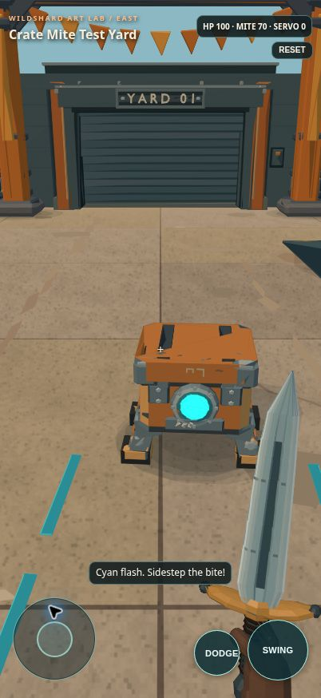
First bite warning. Actual 402 × 874 Chrome gameplay.Daylight above East 01
Blue sky grades into a pale horizon with feathered clouds beyond the loading bay. The sky follows turns but does not slide with the player. Its editable texture recipe adds no image downloads to the playable demo.
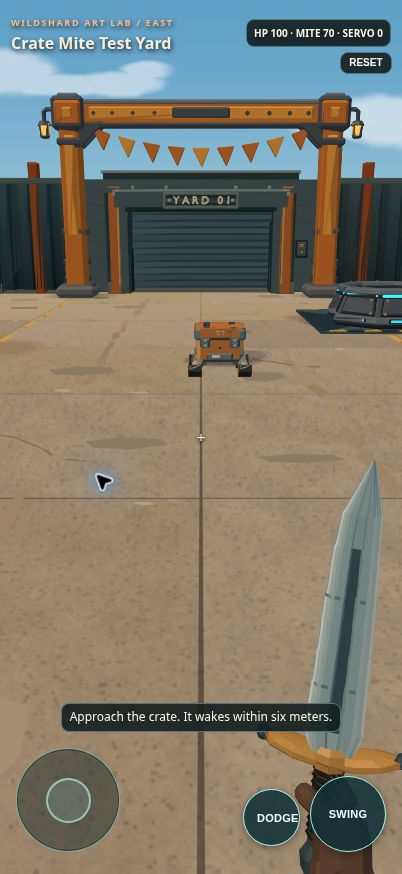
Actual 402 × 874 Chrome gameplay on the Canvas renderer.East E01 · Portrait composition
Yard 01 stays in frame
The original stencil now sits on a wall-mounted sign beneath the gantry. It stays in frame as the player closes on the Mite and the gantry beam crops out. Camera, combat and the reusable gantry asset are unchanged.
 First bite windup in the 402 × 874 Chrome software renderer.
First bite windup in the 402 × 874 Chrome software renderer.East E01 · Playable material study
Concrete grain in the playable yard
Fine aggregate gives the loading apron texture between the larger chips and oil stains. Both browser renderers use the same procedural recipe; there are no texture files to download or extra triangles. The grain fades toward the horizon so the cyan bite warning stays legible.
 Actual 402 × 874 Chrome gameplay in the software renderer. Browser demo only.
Actual 402 × 874 Chrome gameplay in the software renderer. Browser demo only.East E01 · Concrete wear
Concrete and armor wear
Tapered wheel scuffs, chipped slab edges and older fluid stains give the concrete a loading-yard history. The apron is 806 triangles, with no new texture download or change to combat collision. The browser Mite now has chipped paint and a faded depot stencil, rebuilt from Blender source. Its native tiers are unchanged. The cyan bite tell stays clear against the floor.
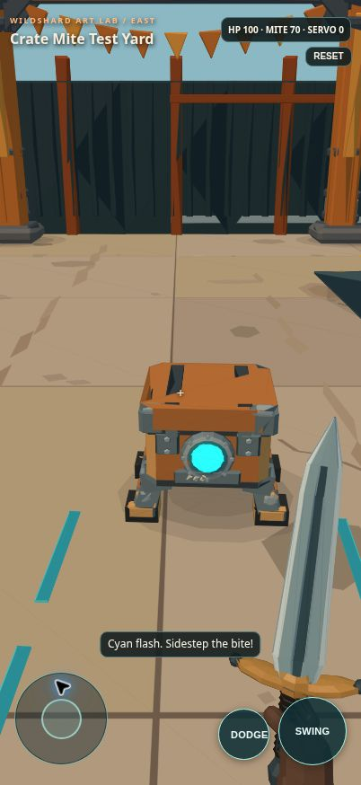
Actual Chrome portrait gameplay at 402 × 874.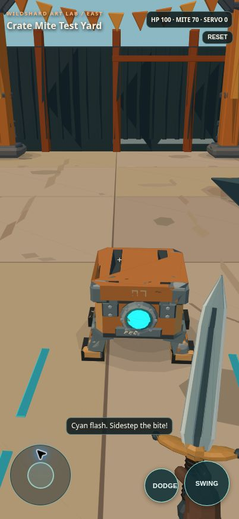
Worn armor in gameplay. The browser build cleared the fight and salvaged the Servo.East E01 · Third playable pass
Lighting and touch controls
Warmer sun, cooler shadows and softer steel highlights give the test yard more depth without texture downloads. The camera now keeps its own drag finger. In Chrome at 402 × 874, the on-screen stick and Swing button cleared the Mite and picked up its Servo at 54 HP.
 Bite warning. Actual browser frame.
Bite warning. Actual browser frame. Servo recovered. Actual browser frame.
Servo recovered. Actual browser frame.East E01 · Second playable pass
Close-up Crate Mite
The browser yard uses a separate 1,734-triangle Mite with steel axle and knee pins, armor plates, an eye guard and stronger recoil. Software contact shadows ground the Mite and nearby props. The native 386- and 138-triangle assets are unchanged. Chrome at 402 × 874 showed this warning, then completed a sword kill and Servo pickup.
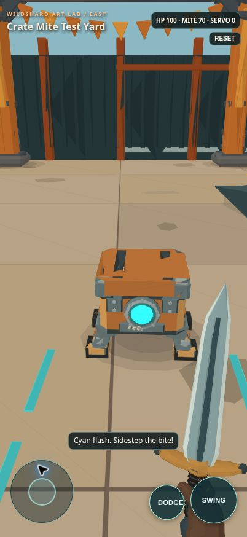
Actual Chrome capture, not a concept or native-device test.East E01 · Playable scene art
Yard 01 gantry
The recovered road gate adds the original mockup’s orange frame, lanterns and bunting behind the fight. Its feet block movement, the center stays open, and the rear wall remains the boundary of this small standalone test. The lower-detail software renderer preserves the sign and silhouette.
 Blender composition using the same yard placement and full gantry model, not gameplay footage.
Blender composition using the same yard placement and full gantry model, not gameplay footage.WSC-ACTOR-002 · Static study
Pallet Jack
Catalogue entry · Model GLB
 Pallet Jack studio and Band 2 scene views · 864 triangles, beneath the 900-triangle target. No rig or behavior.
Pallet Jack studio and Band 2 scene views · 864 triangles, beneath the 900-triangle target. No rig or behavior.Blender · Unpublished static scene
East Threshold
The masonry East Gate and industrial seam are two separate crossings. The inherited masonry opening is 12 m; the industrial opening is 17 m. The visuals show the later East lead-out, not a completed East district. Player fit, collision and runtime behavior are not validated.
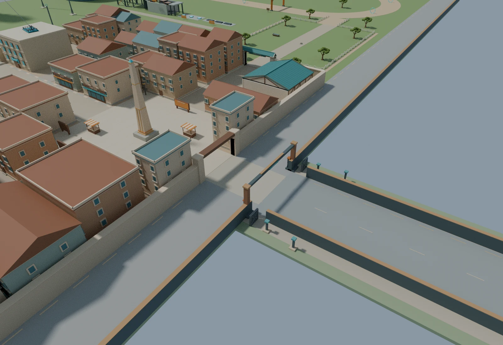
Blender reimport · Overhead of the masonry gate and industrial seam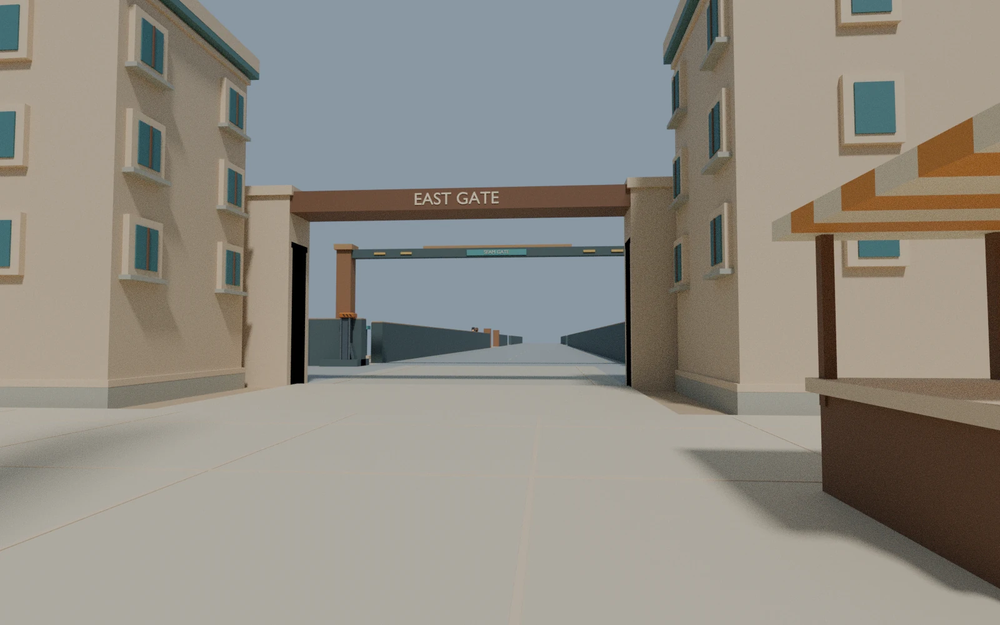
Blender reimport · Eye-height approach from Town to EastRecovery inventory: editable Blender scene (53.5 MB), static GLB export (21.2 MB), build recipe and QA exist separately. No new scene download is attached here.
Blender · Unpublished asset study
East crossing beacon
A separate study, not placed in the East Threshold scene. The editable Blender source, textures and a preliminary 2.2 MB GLB exist separately. No screened reimport image yet: the first export omitted authored tangents, and visual review remains pending. No catalog ID or quality acceptance.
Blender · Whole West · Assembled art WIP
Whole-West orientation
Start with the full West overhead, then follow West Avenue from the perimeter opening toward Town at eye height. Ten district footprints are visible in the assembled West scene. The stills come from the exported scene reimported into Blender. No East or seam art, traversal, collision, physics or runtime performance is validated here.
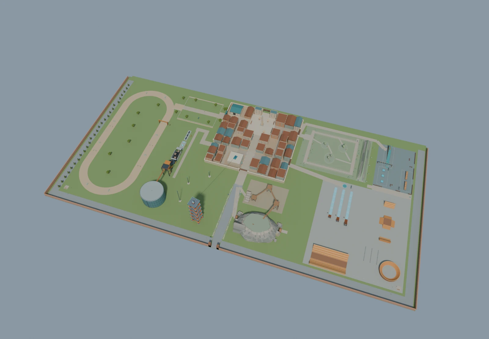
Full West overhead · Ten district footprints in a single view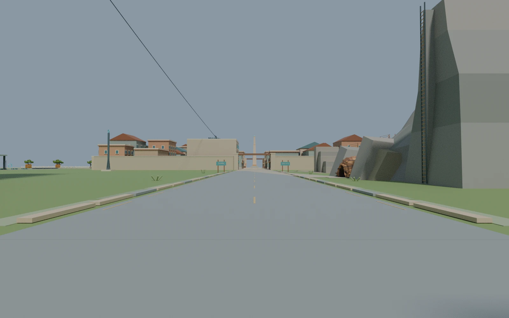
1.70 m arrival camera · West Avenue toward Town
Blender · West precinct · Assembled art WIP
West Stable Gate, paddock and riding oval
Three Blender views of the assembled scene after reimporting the exported GLB. R02 connects the stable frontage and gate to the paddock and riding oval. It retains the historical 48 × 60 m paddock and 208 × 88 m oval footprints, with eight rings and four jump placements. These are visual checks, not final map approval.
Pedestrian and mounted heights describe the cameras only. No horse animation, gameplay, collision, rider clearance or performance was tested. The landscape and architecture are provisional; reused props are not new catalog assets.
 Overview · Stable frontage, paddock and full riding oval
Overview · Stable frontage, paddock and full riding oval
 1.75 m pedestrian camera · Stable-lane approach
1.75 m pedestrian camera · Stable-lane approach
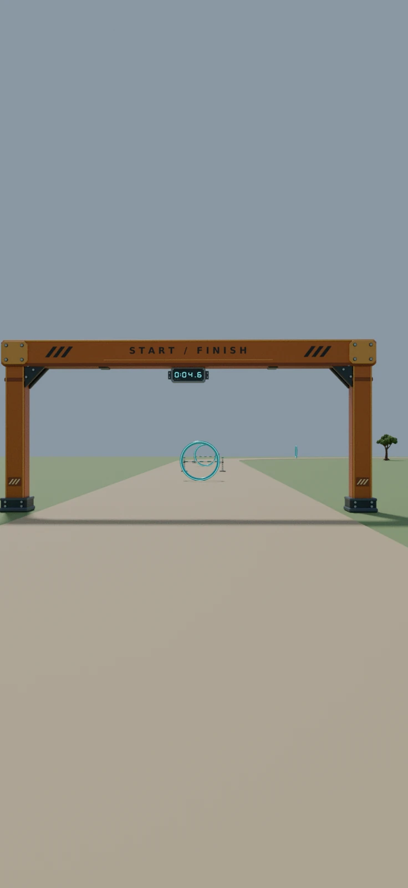
2.6 m arrival camera · Mounted-height composition only
Movers Sequence extension
See the separate Station 4 spinner pivot test.
These Blender views show the exported scene after reimport. The static six-station study adds a 98 × 58 m sequence to West R02 and rises to an 18 m deck. Existing stable and riding areas are unchanged. The bridge is absent in this earlier checkpoint.
This is unintegrated art. Motion, timing, jumps, collision, player fit and performance have not been tested.
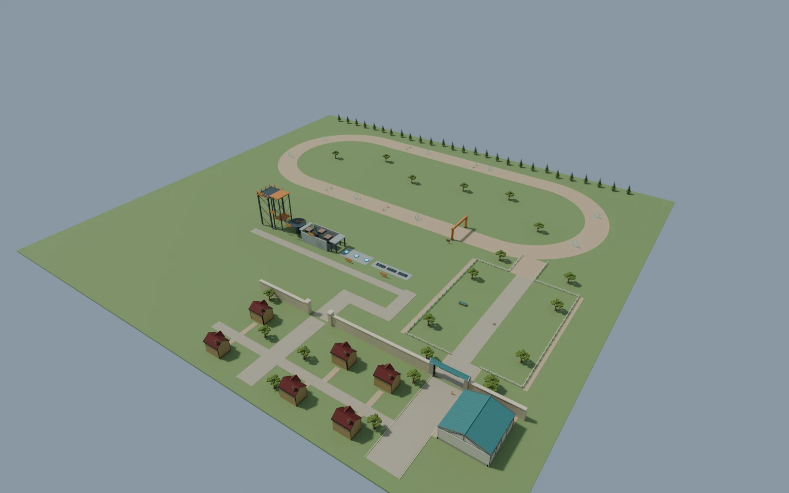
Matched overview · Movers Sequence beside the stable and riding precinct
 1.75 m pedestrian camera · Outside the Movers Gate
1.75 m pedestrian camera · Outside the Movers Gate
Shared-roof bridge and tank junction · Art WIP
This later West scene study adds the bridge and tank junction at the upper deck. Both views show the exported scene after reimport into Blender. The geometry is an art WIP, not a traversal or performance pass. Player fit and collision are untested.
 Bridge and tank in context · Shared roof at the West junction
Bridge and tank in context · Shared roof at the West junction
 Deck-eye view · The bridge junction and tank access deck
Deck-eye view · The bridge junction and tank access deck
West zipline return · Art WIP
Two Blender views of the exported scene after reimport show the static cable from the summit toward the West Gate roof. The town frontage and street are still blockout. This is a visual cable check only; runtime movement, clearance, collision and performance are not validated.
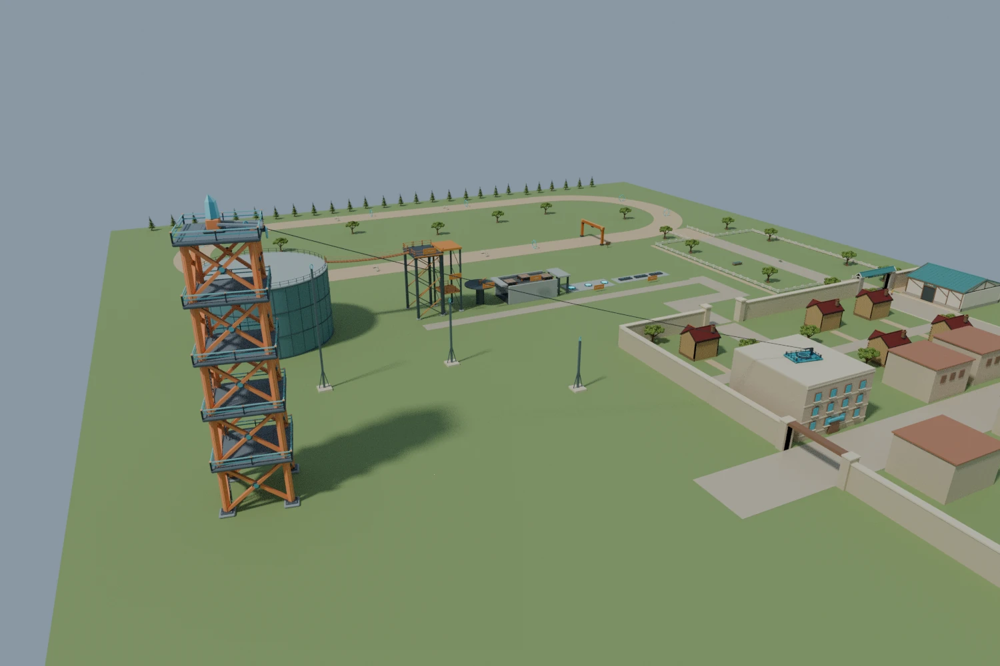
West return overview · Zipline above the riding and Movers precincts
 Historical West Gate camera · Schematic town frontage and roof arrival
Historical West Gate camera · Schematic town frontage and roof arrival
West whole-town shell · Art WIP
The town shell adds 35 residences and nine reserved lots, with six gate openings and a 40 × 40 m plaza. The checked West zipline cable is unchanged. Both views show the exported scene after reimport into Blender. This is a static art study, not a gameplay, collision or performance pass.
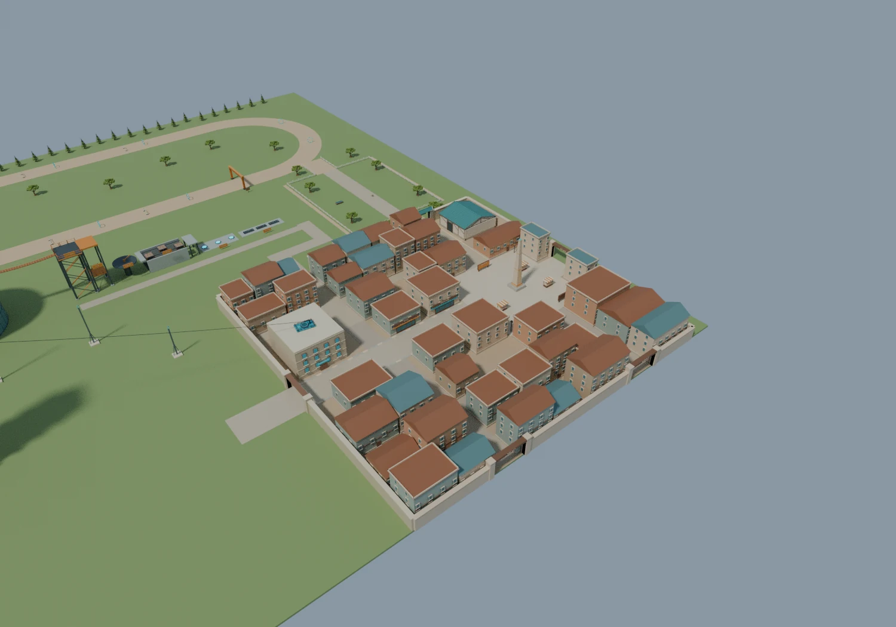
Town overview · Walled town, Main Street and preserved West precinct
 1.70 m street-eye view · Main Street facades from the historical camera
1.70 m street-eye view · Main Street facades from the historical camera
Climb Yard and The Rock · Art WIP
The West Gate approach leads to an exterior study with three raised yard decks, rope bridges and a 16 m crag. The cave mouths are shallow exterior recesses, not playable interiors. Both views show the exported scene after reimport into Blender. Traversal, collision and runtime performance are not validated.
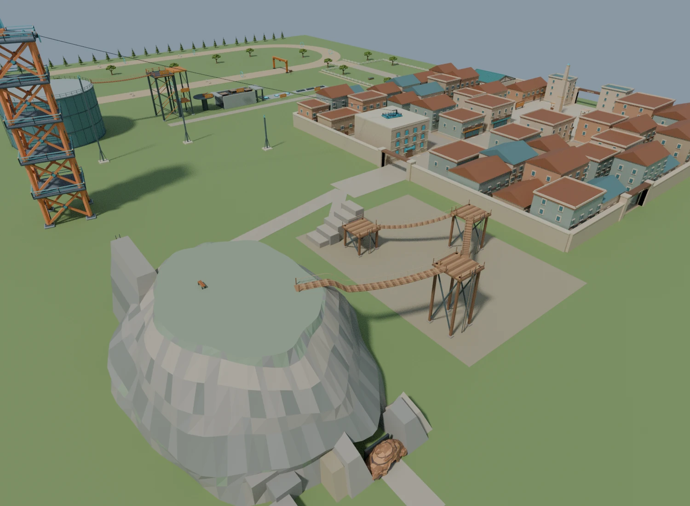
Overview · Climb Yard decks and rope bridges beside The Rock
 West Gate context · The exterior approach to the yard and crag
West Gate context · The exterior approach to the yard and crag
Hover Park · Art WIP
This static extension connects Hover Park to the West precinct through Park Gate. Three kicker lanes, two facing launch walls and a bowl sit within the 134 × 122 m park footprint. Both views show the exported scene after reimport into Blender. Riding, collision, gameplay and runtime performance have not been validated.
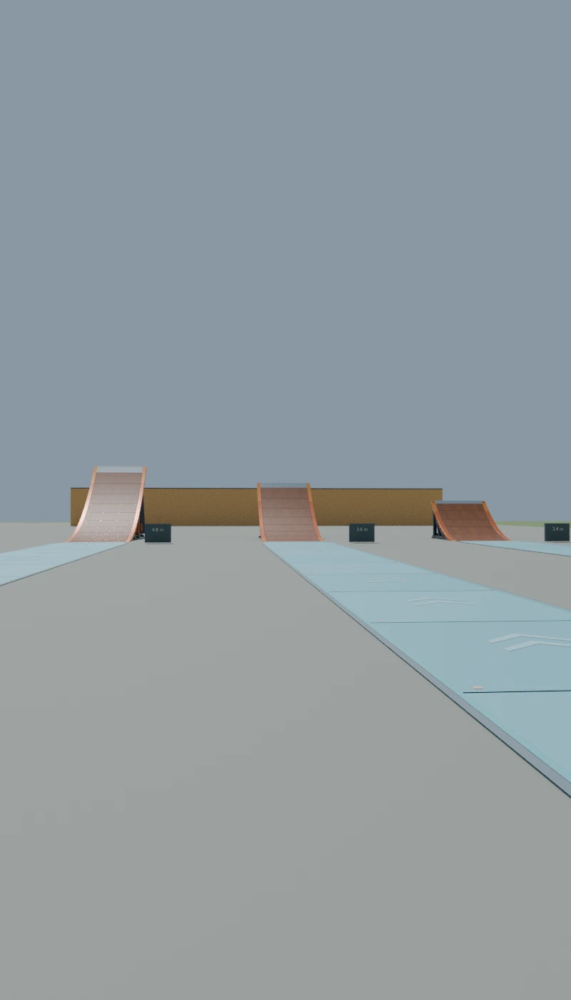
Historical 1.70 m park-eye camera · Hover Park and its facing launch walls
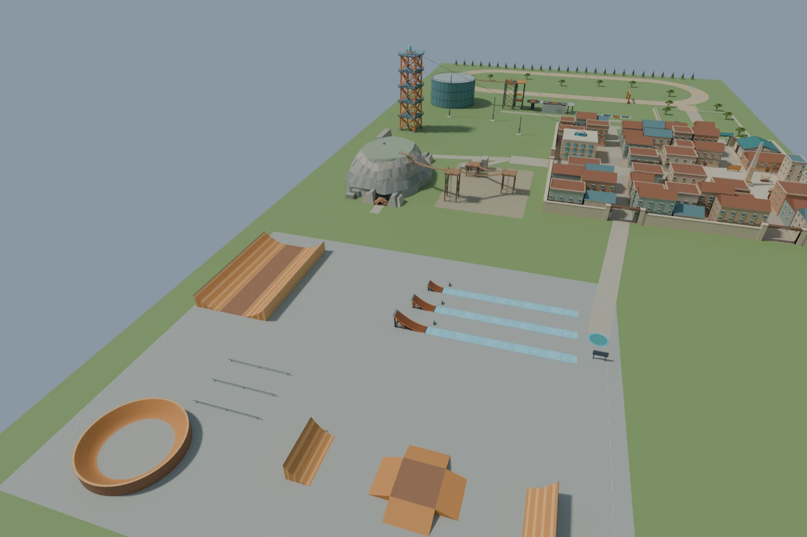
Establishing view · Hover Park looking back toward Park Gate and The Rock
Physics Yard and Hover Park alley · Art WIP
The 78 × 54 m yard adds static seesaws, a ball ramp and a skittle bank beside the 8 m alley. Both views show the exported scene after reimport into Blender. This is entirely static art: there is no physics simulation, scoring or gameplay validation.
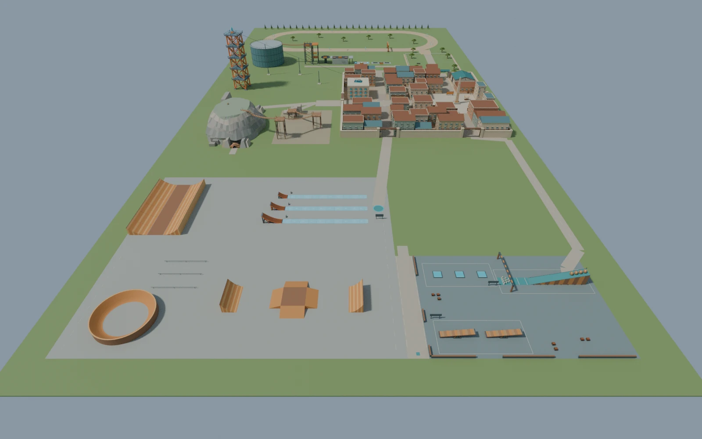
Wide view · Physics Yard beside Hover Park
 1.70 m eye-level view · Alley between the two yards
1.70 m eye-level view · Alley between the two yards
Range Gate meadow and approach · Art WIP
This static landscape study connects the town frontage to a pedestrian square, meadow garden and low terrace beside Physics Yard. Both views show the exported scene after reimport into Blender. The landscaping is illustrative; gameplay, traversal, collision and runtime performance are not validated.
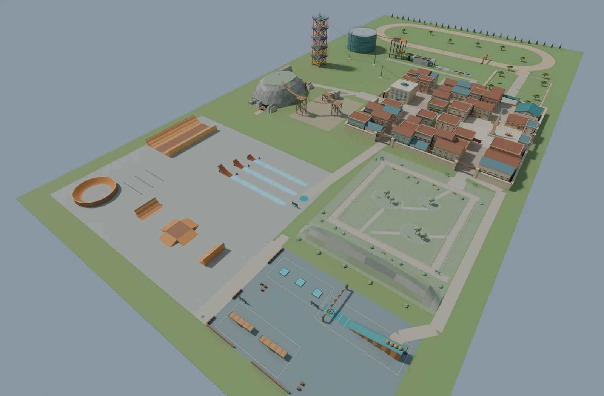
Overview · Town, Range Gate meadow, Hover Park and Physics Yard
 Eye-level view · The meadow path leading back to Range Gate
Eye-level view · The meadow path leading back to Range Gate
Blender · W10a · Art WIP
Horse mounting block
Three timber treads on teal cheeks, with dark ground skids and cream nosings. Both images show the exported GLB after reimport into Blender. This is unintegrated art, untested with a rider; mount interaction, placement and collision are not validated.
263,288 raw bytes · 5,264 triangles · embedded materials, no external textures. Download GLB
 First angle showing three timber treads and teal side supports
First angle showing three timber treads and teal side supports
 Reverse angle showing rear support and stepped teal cheek
Reverse angle showing rear support and stepped teal cheek
Blender · West riding course · Art WIP
W10 paddock and riding-course props
Two standalone art candidates. These renders show the actual exported GLBs reimported in Blender. Neither model is gameplay-integrated or accepted.
Paddock water trough
Rolled metal rim, inset water, timber stave cladding and small supply pipe. The intended paddock fit has not been tested.
315,976 raw bytes · 6,112 triangles · embedded materials, no external textures. Download GLB
 Primary view
Primary view
 Reverse view
Reverse view
Reusable riding jump
One striped pole and braced standards for four future placements. The 4.1 m rail is shorter than the legacy blockout span; placement and horse clearance still need checking.
158,028 raw bytes · 2,560 triangles · embedded materials, no external textures. Download GLB
 Primary view
Primary view
 Reverse view
Reverse view
Blender · WSC-MODULE-007 · Art WIP
Hover Park kicker · 2.4 m class
An actual Blender model for the smallest D7 kicker class. Laminated birch decking sits in orange side channels above an open, braced chassis. This is a one-way kicker, not a launch wall or halfpipe. The historical W07 concept board informed the colors and materials, not the D7 geometry.
The lip is 2.400 m above the ground datum. Proposed footprint: 3.583 m wide × 5.229 m long. The GLB export is 686,048 raw bytes, with 10,732 triangles and 8 draw primitives.
Draft art candidate, not accepted or integrated. Curvature, placement, collision and rideability have not been validated. The cyan run-up is a render backdrop, not part of the model or a level placement. See the earlier graybox comparison or the authored taller candidates.
 Eye-height approach
Eye-height approach
 Studio three-quarter view
Studio three-quarter view
 Rear service side
Rear service side
Blender · Art-only diagnostic
Hover Park kicker progression
The authored 2.4 m candidate is unchanged. The 3.6 m and 4.8 m forms on this board are temporary Blender grayboxes, not the later authored taller candidates. In the historical approach camera on an uncluttered field, the three heights read in order, but lip and curvature details were not reliably distinguishable at that distance.
 Historical approach render, closer inspection render and profile diagrams. Tap to enlarge.
Historical approach render, closer inspection render and profile diagrams. Tap to enlarge.With centers and 45 m run-up strips held fixed for the diagnostic, the authored 2.4 m toe does not overlap its strip. The 3.6 m and 4.8 m graybox toes overlap theirs by 0.90 m and 2.20 m respectively. These are geometry measurements under the study setup, not a placement recommendation or a test of gameplay, collision, clearance, or rideability.
Blender · Authored art candidates
Hover Park · Switchback and Gantry
Two authored kickers with orange rails and birch deck panels, distinct from the earlier grayboxes. Switchback uses folded side plates and an open chevron rear; Gantry has a splayed rear tower and a full-height X brace.
For the comparison, the two taller toes were aligned to the end of the historical 45 m strips. This preserved the strip length in the render by moving the taller kickers farther downrange. The 2.4 m candidate stayed in its original test position. This is an art diagnostic, not a placement recommendation, game integration, or a test of at-speed readability, collision or rideability.
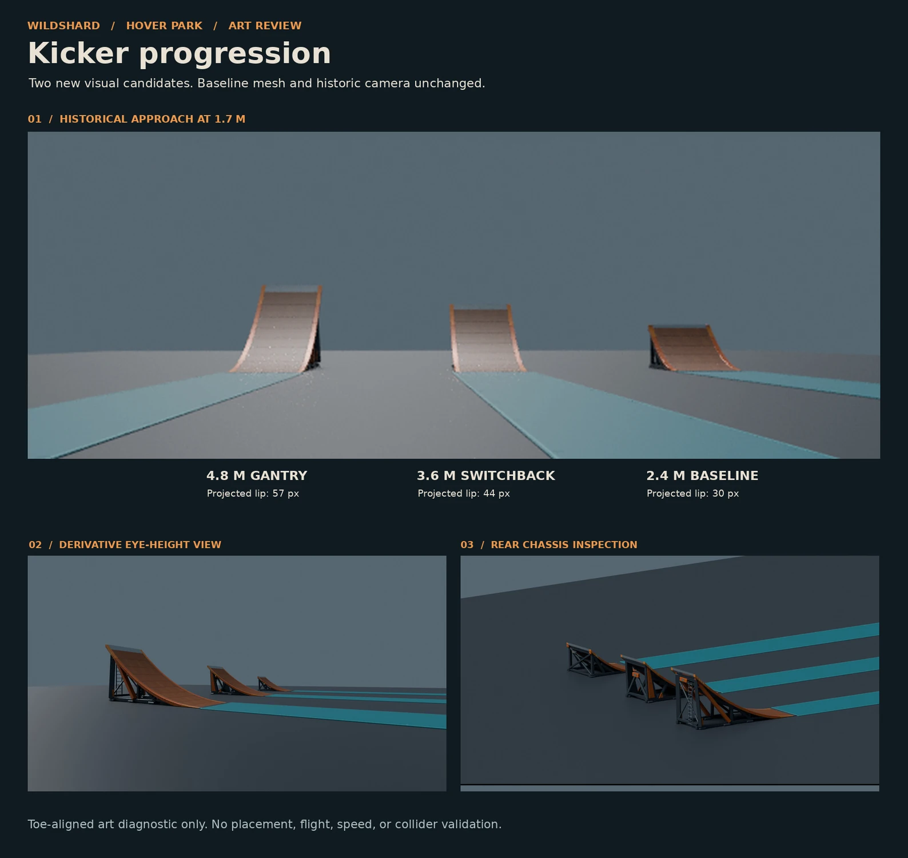
Toe-aligned art diagnostic · Actual Blender renders. Includes the unchanged 2.4 m candidate as a reference; only the taller two are new.Blender · Industrial props · Art candidates
East industrial prop batch
Four standalone art candidates. The dock, caged gooseneck and low barrier are informed by E03/E04/E07. The tall straight-arm lamp uses W03 as its main reference and is distinct from the curved gooseneck and the hanging street lantern. The luminous materials do not implement any light, trigger or docking behavior; no collisions or integration are included.
 Actual GLBs reimported and rendered in Blender.
Actual GLBs reimported and rendered in Blender.Blender · Town props · Art candidates
West town prop batch
Four standalone art candidates: a timber spool with a wound cable, a staved barrel with metal hoops, a double-sided wrench sign and a slatted lookout bench. These are not placed in the level and do not include gameplay or collision setup.
Blender · Standalone art studies
Industrial seam modules
One X-braced gate leaf, one seam post and one straight industrial wall bay. The combined view uses two instances of the same leaf; it is not two different exports. M05 supports the distant X-braced silhouette and the post and wall forms, not hinge or attachment details, dimensions, opening motion, or whether the pieces fit. The assembled view is an inferred art comparison, not a level placement, collision test, or prototype promotion. These are distinct from the masonry East Gate.
 Reimported GLBs · Isolated parts and an inferred arrangement.
Reimported GLBs · Isolated parts and an inferred arrangement.Blender · Standalone art studies
West range targets
Three standalone visual studies: a timber bullseye target, a plain, unlit straw bale with crossed bindings, and an ochre padded practice dummy. The straw bale has no flame, burn treatment or effects. The W06 grey frame shows dummy placement only, not model dimensions. No placement, collision, projectiles or target interactions were authored.
 Reimported GLBs · Studio views from front and rear.
Reimported GLBs · Studio views from front and rear.Blender · Standalone art studies
West course props
Four standalone art studies: a fixed orange swallowtail flag, a cyan hoop mounted on a post, the mover station sign numbered 2, and a straight timber guardrail bay. The hoop is not the freestanding riding ring; the flag is not the pennant strand. No grapple or mover interactions, placement, animation or collision were authored.
Blender · Zone art
West freestanding flower tub
W01 shows a freestanding timber tub with orange blossoms. This is separate from the masonry flower bed and wall-mounted flower box.
 Actual Blender GLB re-imports · 254,012 raw export bytes
Actual Blender GLB re-imports · 254,012 raw export bytesBlender · Zone art
Tower to town
The West grapple tower, zipline hardware and cyan zip-house roof staged together to check the roughly 99 m visual span. No route, map or gameplay changes.
 Three art-only views made from reused exports · Not counted as a new model
Three art-only views made from reused exports · Not counted as a new modelBlender · Trophy wall composition
Trophy wall from the plaza
Existing backing, frame and Big Pallet trophy together. The empty frames mark unmodeled trophies. This is a visual review, not a gameplay or map change.
 Composition rendered with imported GLBs · Not counted as a new model
Composition rendered with imported GLBs · Not counted as a new modelBlender · Standalone art studies
West training venues
The tall West grapple tower and the cyan hover run-up, shown as static art. The superseded halfpipe is not included.
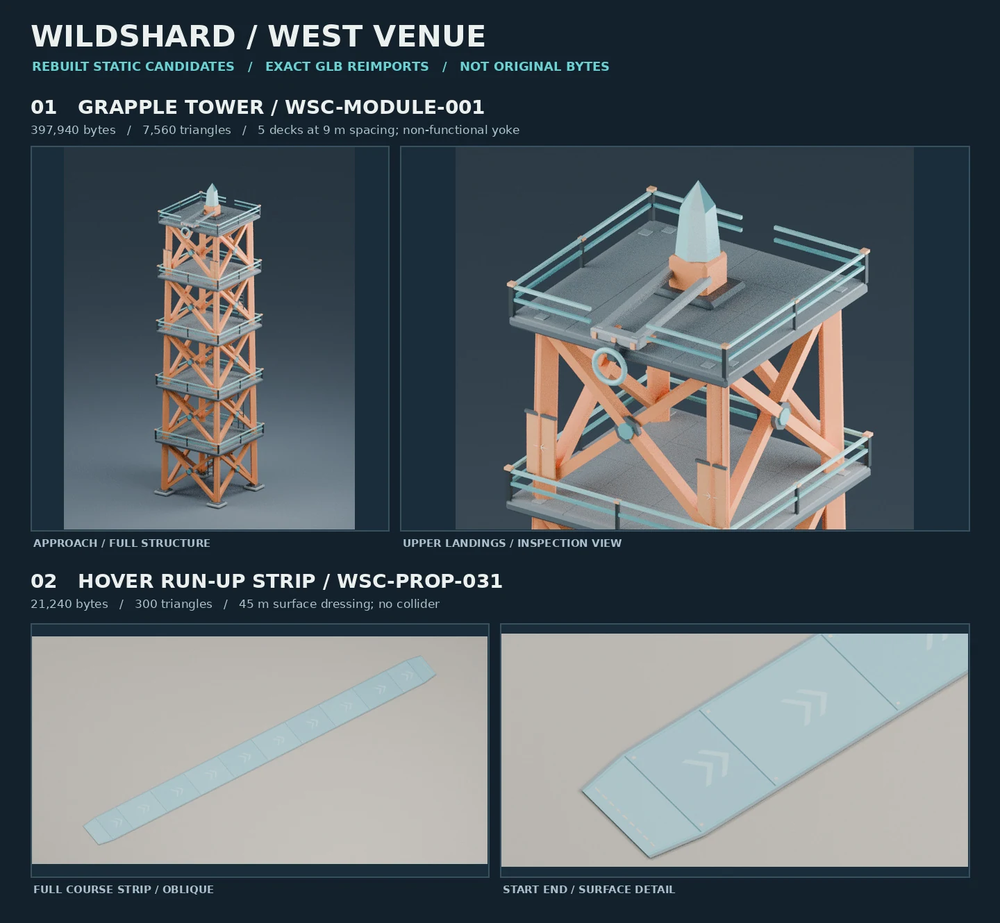
Actual rebuilt GLB re-import renders · 419,180 raw export bytesBlender · Standalone art studies
East arena architecture
Titan entrance, Gauntlet court bay and Titan perimeter arc. These are reusable art candidates inspired by the references, not reconstructions of the older arena layouts.
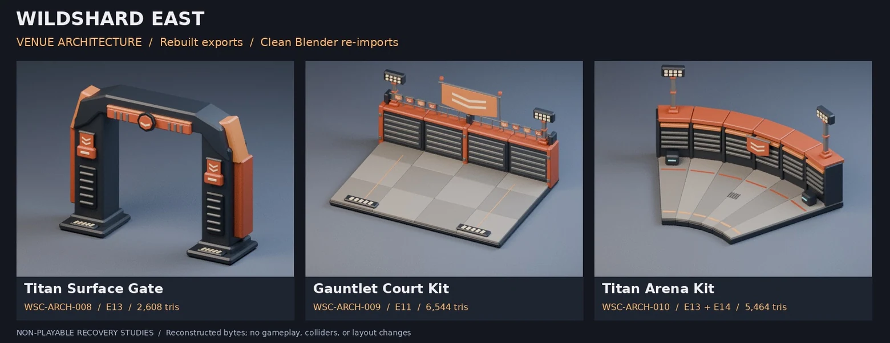
Actual rebuilt GLB re-import renders · 867,212 raw export bytesBlender · Standalone art studies
Town facade and shop kit
Modular town facade bay, small shop interior kit and the doorway awning. Existing market stall and yard barriers are not counted again.
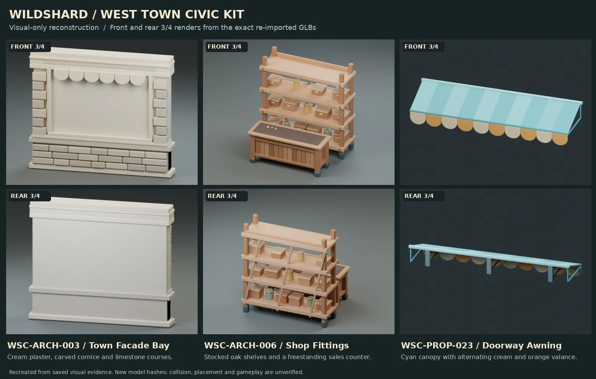
Actual rebuilt GLB re-import renders · 928,336 raw export bytesBlender · Lookout composition
West climb and ropewalk
The cave, bench, lookout and ropewalk combined in a local staging scene. The placement is a visual review, not a gameplay or map change.
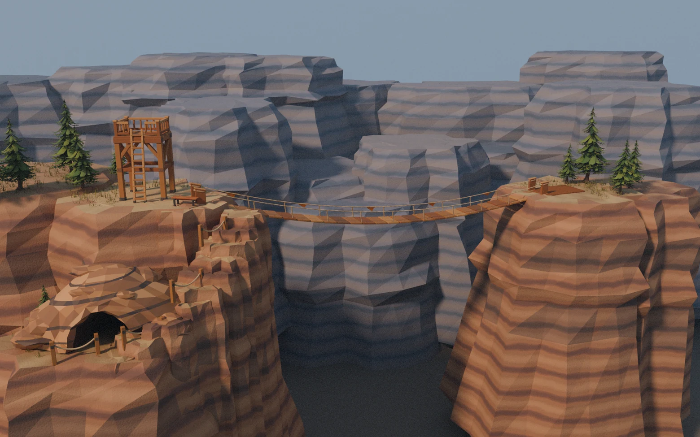
Composition rendered with imported GLBs · Not counted as a new modelBlender · Standalone art studies
West town details
Three small props: a traffic cone, a pennant string and the town’s pointed wall banner.
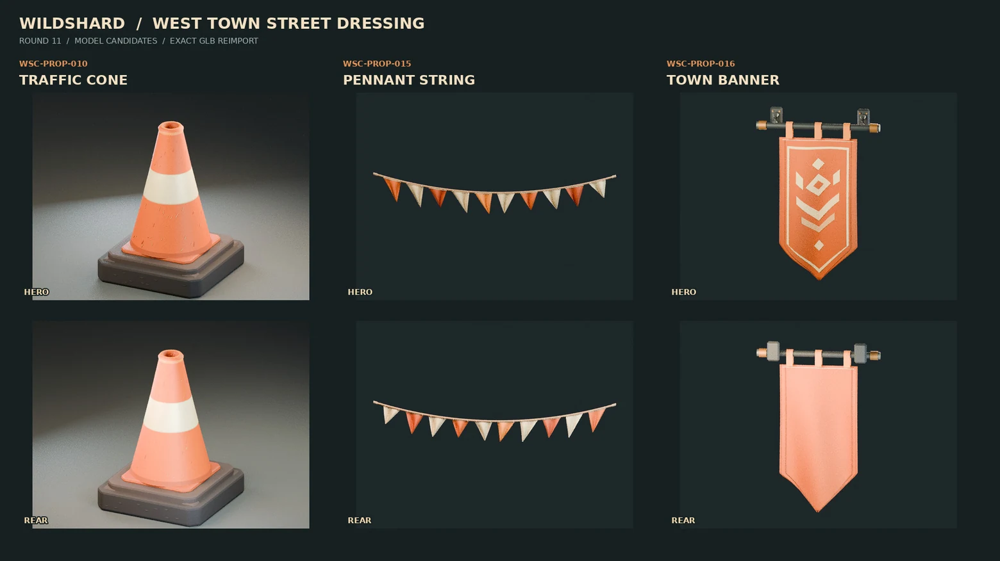
Actual GLB re-import renders · 870,680 raw export bytesBlender · Standalone art studies
West route details
Static zipline cable with fittings, separate landing pad and modular range curb. No traversal or collision changes.
 Actual GLB re-import renders · 1,223,376 raw export bytes
Actual GLB re-import renders · 1,223,376 raw export bytesBlender · Standalone art studies
Paving and everyday props
Plaza paving, directional avenue paving, stacked pallets and physical contract placards. No gameplay, quests or UI.
 Actual GLB re-import renders · 665,188 raw export bytes
Actual GLB re-import renders · 665,188 raw export bytesBlender · Course composition
Riding course at eye level
New gantry with existing timer, rails and hoops in a local staging scene. The placement is a visual review, not a gameplay or map change.
 Composition rendered with imported GLBs · Not counted as a new model
Composition rendered with imported GLBs · Not counted as a new modelBlender · Standalone art studies
West course and trophy display
Start/finish gantry, separate range timer and bare trophy wall backing. The time on the display is baked into the mesh, not live timing.
 Actual GLB re-import renders · 824,792 raw export bytes
Actual GLB re-import renders · 824,792 raw export bytesBlender · Standalone art studies
East vault and yard access
Open circular vault door, steel yard gate frames and an industrial stair kit. All three are static art models.
 Actual GLB re-import renders · 793,864 raw export bytes
Actual GLB re-import renders · 793,864 raw export bytesBlender · Standalone art studies
West terrain and rooftops
Recessed cave portal, deciduous tree, raised planter bed and cyan roof deck. The roof is a distinct part from the landing pad.
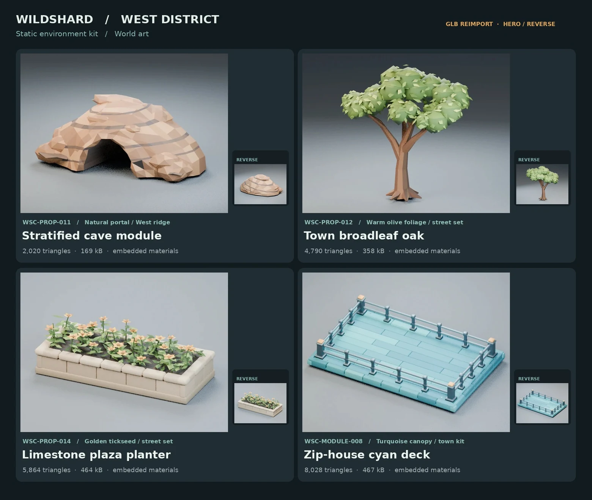
Actual GLB re-import renders · 1,458,036 raw export bytesBlender · Standalone art studies
Reusable Mover pieces
Conveyor, inert jump-pad casing, platform and guardrail. The jump-pad look is a plan-only interpretation; the belt and pad do not move or launch anything. No placement, collision or gameplay.
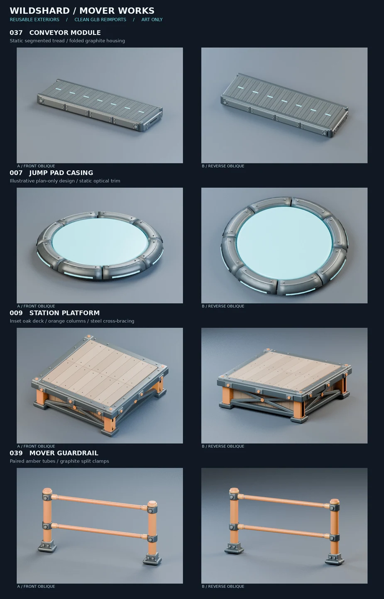
Actual GLB re-import renders · 1,744,960 raw export bytesBlender · Standalone art studies
West ropewalk and rock lookout
Timber rope walkway, stone-post rope handrail and raised timber lookout. These are three distinct modules, not an assembled scene. No placement, collision or gameplay.
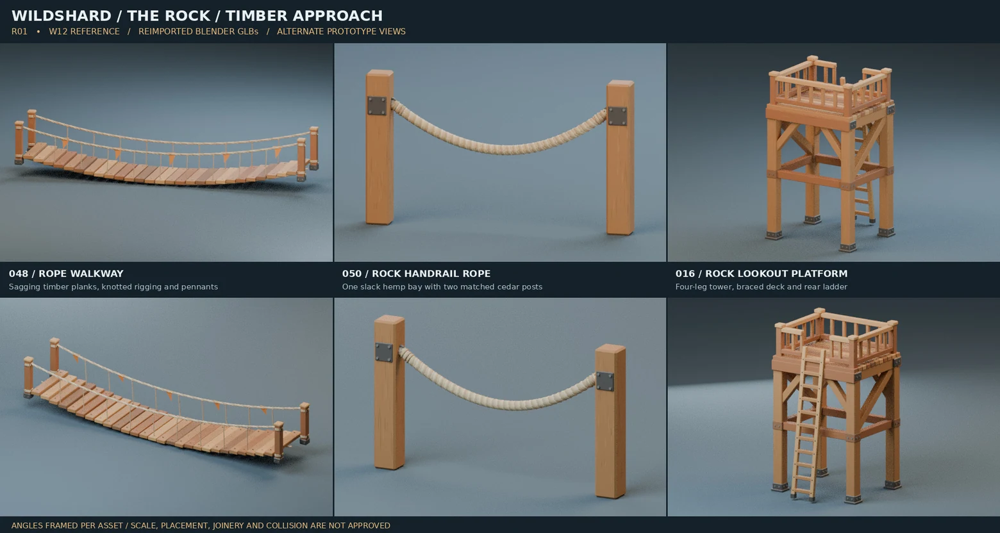
Actual GLB re-import renders · 1,792,492 raw export bytesBlender · Standalone art studies
East foundry and approach
Foundry furnace, keycard shed and road gate gantry. These standalone shells are not connected to doors, systems or interactions. No placement, collision or gameplay.
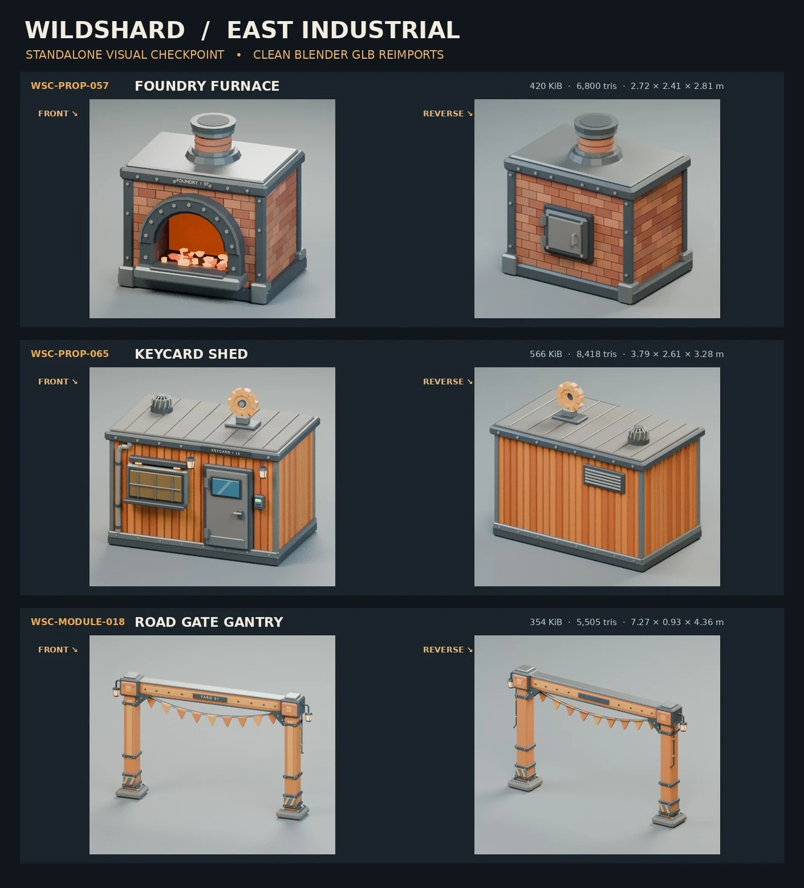
Actual GLB re-import renders · 1,372,292 raw export bytesBlender · Standalone art studies
West range and riding course
Sandbags, a decorative range wall and a postless riding ring. The ring is distinct from the post-mounted hoop. No placement, collision or gameplay.
 Actual GLB re-import renders · 852,156 raw export bytes
Actual GLB re-import renders · 852,156 raw export bytesBlender · Standalone art studies
East Vault props
Plant pot, keyhole banner, closed vault bulkhead and segmented metal barrier. The bulkhead is a static art model. No placement, collision or gameplay.
 Actual GLB re-import renders · 1,621,296 raw export bytes
Actual GLB re-import renders · 1,621,296 raw export bytesBlender · Standalone art studies
West cache and trophies
Cache chest, trophy display frame and Big Pallet tine trophy. These are separate models, not a placed scene. No placement, collision or gameplay.
 Actual GLB re-import renders · 1,115,784 raw export bytes
Actual GLB re-import renders · 1,115,784 raw export bytesBlender · Standalone art studies
Mover and riding-course hardware
Mover access ladder, pale enamel industrial tank and a gantry riding timer. The timer is a static art prop, not gameplay UI. No placement, collision or gameplay.
 Actual GLB re-import renders · 872,200 raw export bytes
Actual GLB re-import renders · 872,200 raw export bytesBlender · Standalone art studies
West lookout scenery
A sandstone landscape boulder, conifer and flowering clump. These are independent scenery modules, not a placed scene. No placement, collision or gameplay.
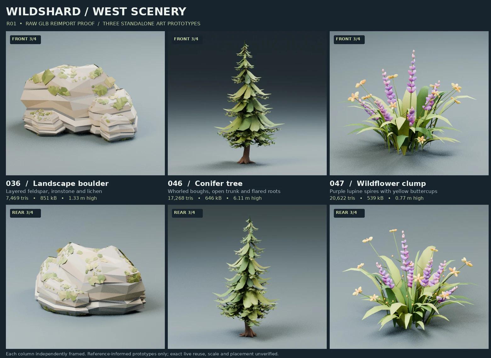
Actual GLB re-import renders · 2,036,424 raw export bytesBlender · Standalone art studies
East yard and vault art
Yard shed, shipping container, modular metal floor plates and orange cover barrier. The floor is decorative art only, not a pressure switch. No placement, collision or gameplay.
 Actual GLB re-import renders · 2,000,736 raw export bytes
Actual GLB re-import renders · 2,000,736 raw export bytesBlender · Standalone art studies
West riding course and lookout
Whitewashed riding fence, timber deck floor bay and six decorative sandstone steps. The deck is a floor module only. No placement, collision or gameplay.
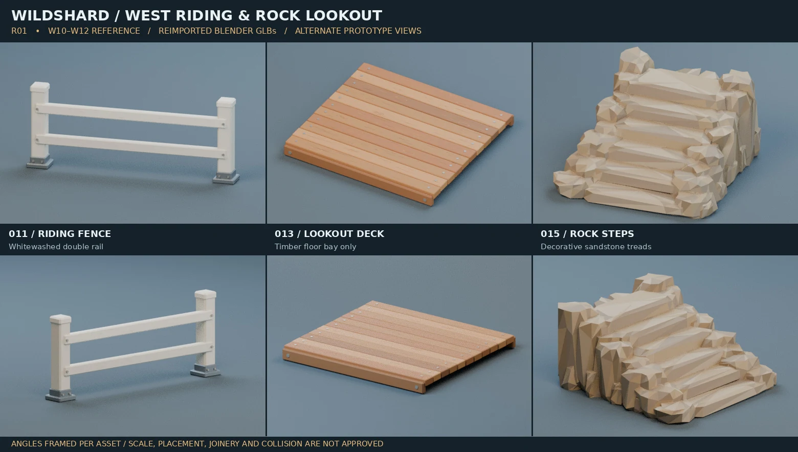
Actual GLB re-import renders · 566,832 raw export bytesBlender · Standalone art studies
East yard and vault utility
Corrugated orange yard wall, eight-lens floodlight tower and freestanding Training Vault information sign. The sign plate is static. No placement, collision or gameplay.
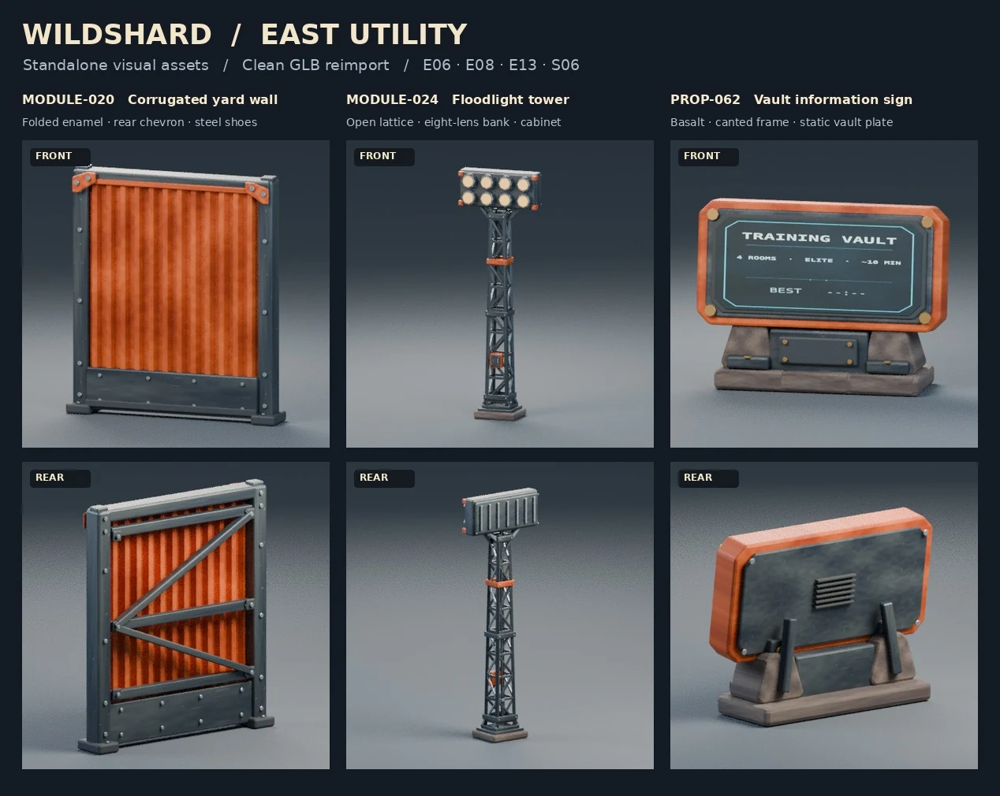
Actual GLB re-import renders · 3,338,712 raw export bytesBlender · Standalone art studies
Town and yard modules
Dark corrugated yard fence, arched timber doorway, terracotta roof and a W04 shop tool rack. The rack is an audit candidate, not a new catalog ID. No placement, collision or gameplay.
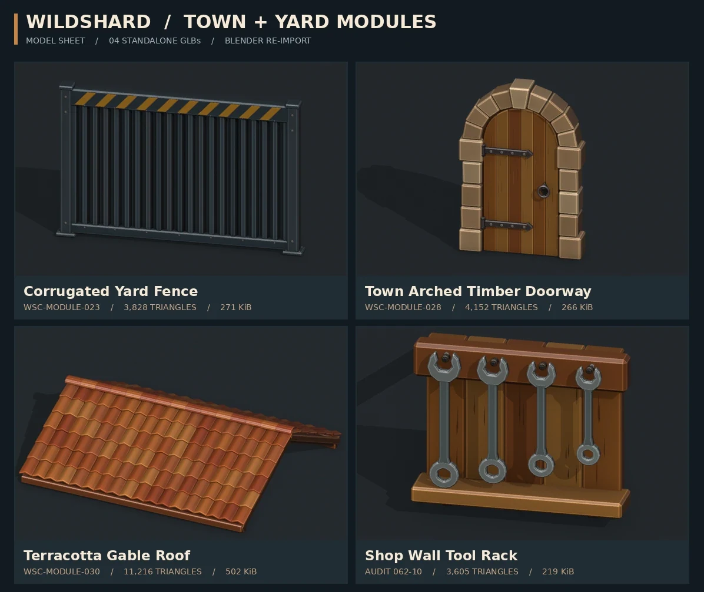
Actual GLB re-import renders · 1,289,308 raw export bytesBlender · Actual assembly · Art WIP
East Gate gatehouse assembly
A newly modeled central arch and roof span connects two instances of the existing East Gate flank tower. This replaces the stand-in portal for the art study. It is distinct from the industrial seam gate post.
Central span GLB only: 2,149,740 raw bytes · 17,944 triangles · 6 material primitives. In a check against the exported geometry, 45 sampled rays through the portal corridor were clear. The arch crown is 4.52 m high. This is not an in-game collision or traversal test.
 Approach · New central span above a matched plaza comparison with the previous stand-in
Approach · New central span above a matched plaza comparison with the previous stand-in
 Roof study · One camera stands on the modeled deck for composition only. The planned ★6 viewpoint is 2.18 m outside the modeled roof and tower envelope, looking over terrain stand-ins. This is a detached view, not a traversable lookout.
Roof study · One camera stands on the modeled deck for composition only. The planned ★6 viewpoint is 2.18 m outside the modeled roof and tower envelope, looking over terrain stand-ins. This is a detached view, not a traversable lookout.
Blender · WSC-MODULE-005 · R01
East Gate flank tower
One reusable masonry tower, with ochre ashlar, an iron coping band on shaped stone supports, and a high arched slit. The slit is a blind recess. Side and rear details are provisional.
R01 GLB: 1,976,996 raw bytes · 15,398 triangles · 8 material primitives · 2 embedded textures. Overall bounds: approximately 3.85 m square and 5.27 m tall.
The eye-height Blender study repeats the same tower on either side of a stand-in portal. Only a single tower is modeled for export. The illustration does not establish final placement, portal clearance, a built interior, navigation, or game integration.
 Isolated · The single R01 tower
Isolated · The single R01 tower Eye height · Two placements for illustration only
Eye height · Two placements for illustration onlyBlender · WSC-PROP-022 · Storefront study
Tinker Rook storefront
A shallow, closed shell with a painted stencil fascia, a recessed warm-lit door and a broad, cool-glazed display. The eye-height renders use the same camera and street kit. The cyan awning in the after shot is a separate prop study and is not included in the storefront export.
R01 export: 663,252 raw bytes · 7,460 triangles · 12 material primitives · 8 embedded textures. Approximately 7.06 m wide × 0.82 m deep × 5.81 m tall.
Independent review: 3.9/5 isolated and in street. The storefront reads clearly, but the display glazing is still flat and the timber-to-stone join needs polish. This work-in-progress comparison illustrates a possible fit on the kit, not canon placement, collision approval or game integration. No interior or shop mechanics.
 Before · Shared street kit
Before · Shared street kit After · Tinker Rook shell and separate awning proxyIsolated · Storefront shell only
After · Tinker Rook shell and separate awning proxyIsolated · Storefront shell onlyKitchen Sink v2 · Art progress
Town Gate Plaza
First Blender study of the plaza, shown alongside the production asset revisions.
Town Gate Plaza · Blender work in progress · 1.26 MB raw for this scene and the prop kit, not a measured zone download. Not integrated into the game or pushed.
Blender · Landmark study · R01
Town Gate clock obelisk
A 22 m terracotta shaft on a limestone pedestal, with a separate bronze clock and stone basin. Historic W01 shows the clock and basin together; W0b specifies a 22 m landmark but does not specify those parts.
Matched Blender views use the same 1.68 m camera height. The still water and scupper housings are visual only: no working jets, timekeeping, or game integration.
Before · Earlier plaza landmark After · R01 landmark in the same view
After · R01 landmark in the same view
 Isolated · Shaft from pedestal to crownDetail · Bronze clock, stone coping and still water
Isolated · Shaft from pedestal to crownDetail · Bronze clock, stone coping and still waterThree separate GLB exports
- WSC-ARCH-004 · 22 m shaft · 1,633,112 bytes · 19,980 triangles · 5 primitives
- WSC-PROP-017 · Clock · 150,828 bytes · 2,848 triangles · 3 primitives
- WSC-PROP-018 · Basin · 1,268,316 bytes · 18,336 triangles · 4 primitives
Raw WIP file measurements, not runtime or download budgets.
Blender · W0b · Reuse study
Three-building street strip
A wide workshop, a narrow three-storey gable and a stepped corner house, built from the same set of parts. These are actual Blender renders. The Town Gate merchant house is unchanged.
Independent review: 3.63/5 mean. The buildings read as distinct silhouettes, but the repeated trim, lantern spacing and uniform paving still need variation.
The shared GLB uses 15 mesh resources across 170 placements. At 884,128 raw bytes versus 2,473,896 bytes for three separate exports of the same geometry, it is 64.3% smaller. This proves that the file reuses meshes, not that the engine batches them on the GPU. Art-only proof, not the final town or a game-integrated scene.
 Eye-height view · 3.65/5Overhead view · 3.55/5
Eye-height view · 3.65/5Overhead view · 3.55/5 Opposite street view · 3.70/5
Opposite street view · 3.70/5Blender · Props
Town Gate prop kit
Contract board, safety bollard, and cargo crate. The image shows the actual Blender assets, not generated concepts.

Blender · WSC-PROP-005
Market awning stall
Independent mean 3.71/5; plaza view 3.75/5. Review noted a readable scalloped canopy and grounded framing. Regular spacing and limited fabric weathering still need work. Focal market WIP, not accepted or integrated.
R01 export: 500,480 raw bytes · 9,785 triangles · 8 draw primitives.
 Studio render
Studio render In-plaza render
In-plaza render Rear view
Rear view Profile view
Profile viewBlender · WSC-PROP-019
Window flower box
Independent review: overall 3.28 → 3.49/5, in-context 3.15 → 3.25/5. R02 export: 435,740 raw bytes. Work in progress, not accepted or integrated.
 Studio render
Studio render In-context render
In-context renderBlender · WSC-MODULE-029
Shuttered window module
Independent intended-visible mean 3.75/5, up from 3.67 before the material pass (studio 3.85, profile 3.65, plaza 3.75). Intended for a recessed opening only. The in-context image uses the earlier graybox house backdrop. Work in progress, not accepted or game-integrated.
R01 export: 370,596 raw bytes · 3,672 triangles · 9 draw primitives.
 Studio render
Studio render In-context render
In-context render Profile view
Profile view Rear view
Rear viewBlender · Town Gate Plaza
Town Gate merchant house
Independent matched composition score: 2.65 → 3.75/5. The scene comparison includes the rebuilt house and selective placement of two existing props; this is not an isolated mesh score. Whole-building art WIP, not game-integrated. The 7.2 × 5.4 m footprint is unchanged; roof and threshold overhangs still need in-engine clearance checks.
R01 export: 1,627,752 raw bytes · 21,124 triangles · 14 draw primitives · six embedded 128 × 128 textures.
Before · graybox house After · merchant house R01
After · merchant house R01 Merchant house at eye level
Merchant house at eye level